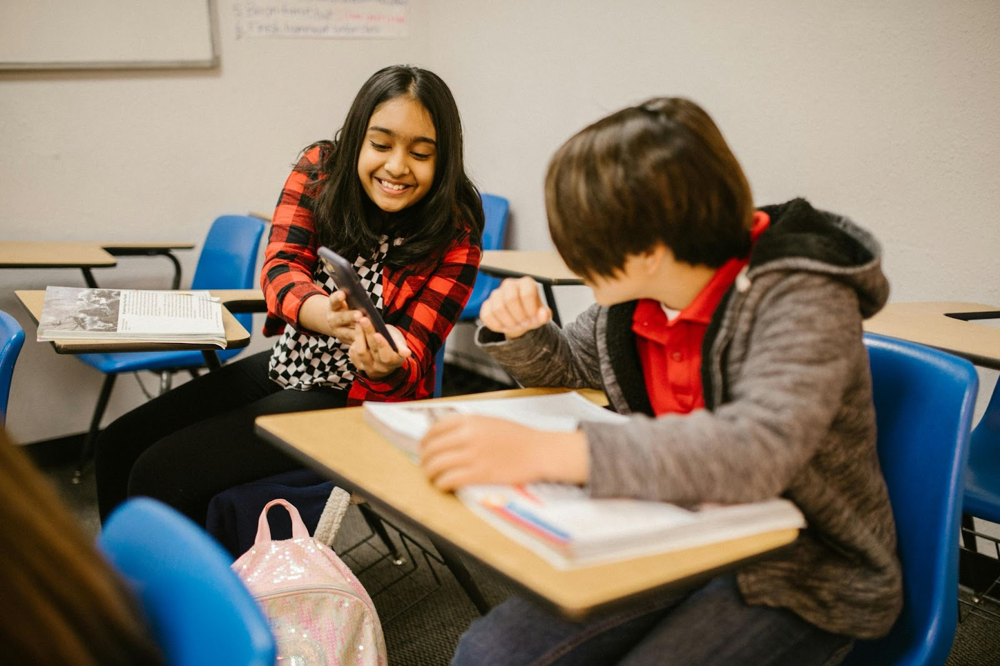
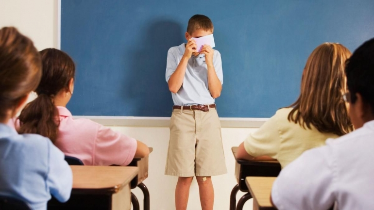
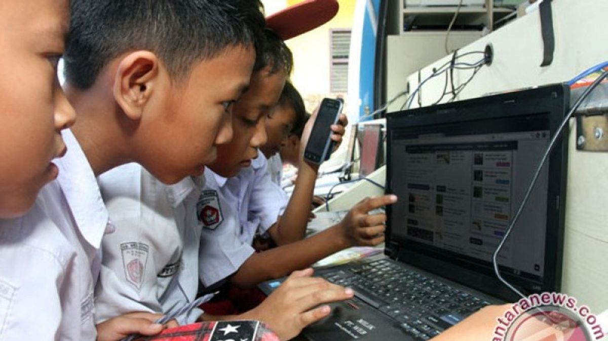
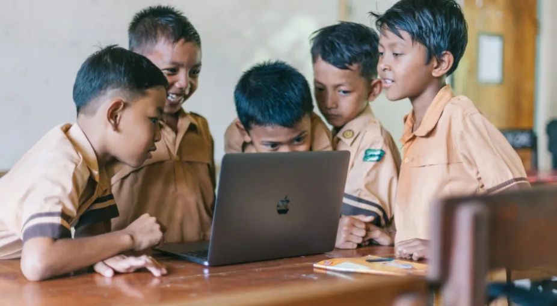

Media sosial memiliki dampak ganda yang signifikan terhadap siswa, yaitu bisa menjadi alat positif untuk belajar dan bersosialisasi, namun juga menimbulkan risiko serius seperti kecanduan, perundungan siber, gangguan kesehatan mental (kecemasan, depresi, rendah diri), penurunan konsentrasi, dan paparan informasi palsu yang berdampak negatif pada prestasi akademik dan perkembangan pribadi mereka.
Cerita Teratas


Tekanan Media Sosial Picu Masalah Kepercayaan Diri Siswa
06 Menit Dibaca
3.5k Pembaca
Media Sosial dan Risiko Penurunan Motivasi Belajar Siswa
06 Menit Dibaca
3.5k Pembaca

Dari Ruang Kelas ke Dunia Daring: Tantangan Pendidikan di Era Media Sosial
06 Menit Dibaca
3.5k Pembaca

Peran Literasi Digital dalam Menghadapi Dampak Media Sosial bagi Siswa
06 Menit Dibaca
3.5k Penonton

Media Sosial: Peluang Edukasi atau Ancaman bagi Generasi Pelajar
06 Menit Dibaca
3.5k Penonton